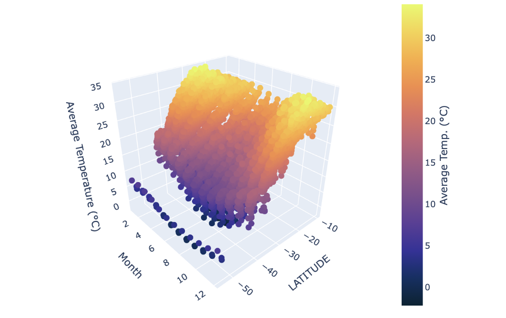

import os
# create folder named "datafiles" if it does not exist
if not os.path.exists("datafiles"):
os.mkdir("datafiles")
Introduction
The NOAA Climate Data provides an extensive record of global temperature trends, collected from thousands of weather stations across various geographic regions. This dataset is important for analyzing long-term climate patterns, regional warming trends, and the impacts of climate change. In this blog, we will explore how to construct and query an SQL database to efficiently retrieve climate data, apply filtering techniques, and compute meaningful temperature trends. Additionally, we will leverage Plotly to create complex visualizations, including scatter map boxes, 3D plots, and faceted box plots, to uncover insights into global and regional temperature changes over time.
Creating an SQL Database
Our first objective is to create an SQL database containing three data frames for temperatures, stations, and countries. We will begin with the temperature data as it is the most difficult.
Downloading NOAA Temperature Data
We start by creating a folder, titled “datafiles,” in the same location as our ipynb to store our CSV files:
For our purpose, we will load climate data from 1901-2020. We first need to download the raw data from the GitHub URL containing the NOAA climate data. The dataset is split into decadal CSV files (e.g., 1901-1910.csv, 1911-1920.csv, etc). The script constructs URLs and downloads each file (saving it to datafiles/ folder):
import urllib.request
# List comprehension to construct decadal files
intervals = [f"{i}-{i+9}" for i in range(1901, 2020, 10)] # 1901-1910 to 2011-2020
# Cycles through and downloads each decade associated CSV
for interval in intervals:
url = f"https://raw.githubusercontent.com/PIC16B-ucla/24F/main/datasets/noaa-ghcn/decades/{interval}.csv"
urllib.request.urlretrieve(url, f"datafiles/{interval}.csv")Once all our CSVs are downloaded into the datafiles folder, we are ready to create the database.
Creating Our SQL Database
We first want to import the necessary packages:
import sqlite3
import pandas as pd
import numpy as npNext, we will establish the database titled temps.db:
# Establish a connection or (in this case) to create the SQLite database named "temps.db"
conn = sqlite3.connect("temps.db")Before inserting the temperatures df into our database we need to write a function that will properly format the data frame. The raw NOAA dataset is stored in a wide format, where each row contains temperature readings for all 12 months of a given year. However, for effective querying and visualization, we need a long format where each row represents a single temperature reading for a specific month and year.
We can write the following function that melts the data into long-format:
def prepare_df(df):
"""
prepares a piece of wide format dataframe into a long format data frame
"""
# "Melt" converts monthly temperature columns into a single column
df = df.melt(
# Keep Station ID and Year as identifiers
id_vars=["ID", "Year"],
# Select VALUE1 to VALUE12 (monthly temperature columns)
value_vars=[f"VALUE{i}" for i in range(1, 13)],
var_name="Month", # Column for month names
value_name="Temp" # Column for temperature values
)
# Clean the Month column (remove "VALUE" prefix and convert to integer)
df["Month"] = df["Month"].str[5:].astype(int)
# Convert temperature values to Celsius
df["Temp"] = df["Temp"] / 100
# Remove NaN values (invalid temperature readings)
df = df[~np.isnan(df["Temp"])]
return dfNow that we have a callable function that will prepare our decadal temperature data frames, we are ready to add them to our temps database under a single table temperatures.
The code below adds all data to the database (from individual CSV files):
# Once again we define our intervals with list-comprehension
intervals = [f"{i}-{i+9}" for i in range(1901, 2020, 10)]
# For-loop interates every decadal CSV file
for i, interval in enumerate(intervals):
filepath = f"datafiles/{interval}.csv"
# Reads in CSV file as pandas df
df = pd.read_csv(filepath)
# Calls function we defined above, converting each decadal df into long-format
df = prepare_df(df)
# Store data in the SQLite database
df.to_sql("temperatures", conn,
if_exists = "replace" if i == 0 else "append", index = False)Thus, our temps database has one table temperatures with all our decade intervals.
We continue by adding the stations’ data next. The station data is much simpler, containing only one CSV file. Therefore, all we need to do is read the CSV as a pandas data frame, then add the data frame into our temps database as follows:
# Stores link to CSV data
filename = "https://raw.githubusercontent.com/PIC16B-ucla/25W/refs/heads/main/datasets/noaa-ghcn/station-metadata.csv"
# Reads in CSV
stations = pd.read_csv(filename)
# Adds the pandas df into the temps database as "stations"
stations.to_sql("stations", conn, if_exists = "replace", index=False)27585We can repeat this process with the country data:
# Stores link to CSV data
filename = "https://raw.githubusercontent.com/mysociety/gaze/master/data/fips-10-4-to-iso-country-codes.csv"
# Reads in CSV
countries = pd.read_csv(filename)
# Adds the pandas df into the temps database as "countries"
countries.to_sql("countries", conn, if_exists = "replace", index=False)279At this point, we should have successfully added all three data frames to the temps database. To make sure that we did, we can run the following to see the contents of our database:
cursor = conn.cursor()
cursor.execute("SELECT name FROM sqlite_master WHERE type='table'")
print(cursor.fetchall())[('temperatures',), ('stations',), ('countries',)]As we can see, we have three tables: temperatures, stations, and countries so we are ready to proceed.
Writing a Reusable SQL Query Function
Now that our climate data is stored in an SQLite database, we need a way to retrieve specific temperature records based on user-defined filters. Instead of writing SQL queries manually every time, we’ll create a function that allows us to query data dynamically.
In a seperate python file, climate_database.py, we will write a function called query_climate_database() which accepts five arguments:
db_file, the file name for the database.country, a string giving the name of a country for which data should be returned.year_beginandyear_end, two integers giving the earliest and latest years for which should be returned (inclusive).month, an integer giving the month of the year for which should be returned.
After our function is written in climate_database.py, we may import the function and check if it is visible as follows:
from climate_database import query_climate_database
import inspect
print(inspect.getsource(query_climate_database))def query_climate_database(db_file, country, year_begin, year_end, month):
"""
Query the climate database for temperature readings in a specified country, date range, and month.
Parameters:
- db_file (str): The file name of the SQLite database (i.e. temps.db).
- country (str): Target country.
- year_begin (int): Start year.
- year_end (int): End year.
- month (int): The month of the year for which data should be returned (1-12).
Returns:
- pd.DataFrame: A data frame containing the
station name, latitude, longitude, country, year, month, and temperature.
"""
# Connect to the database
conn = sqlite3.connect(db_file)
# Writes the SQL query using f-strings
query = f"""
SELECT
S.name AS NAME,
S.latitude AS LATITUDE,
S.longitude AS LONGITUDE,
C.name AS Country,
T.year AS Year,
T.month AS Month,
T.temp AS Temp
FROM
temperatures T
JOIN
stations S ON T.id = S.id
JOIN
countries C ON SUBSTR(S.id, 1, 2) = C."FIPS 10-4"
WHERE
C.name = '{country}' AND
T.year BETWEEN '{year_begin}' AND '{year_end}' AND
T.month = '{month}'
ORDER BY
S.name ASC
"""
# Matches stations ID from the temps and stations tables
# Matches using countries: FIPS 10-4 with first two letters of ID from Stations
# Filters by country name, start/end year, and month
# Orders the station names in alphabetical order
df = pd.read_sql_query(query, conn)
# Close database
conn.close()
return df
To check if our query is properly working we can run the following:
query_climate_database(db_file = "temps.db",
country = "India",
year_begin = 1980,
year_end = 2020,
month = 1)| NAME | LATITUDE | LONGITUDE | Country | Year | Month | Temp | |
|---|---|---|---|---|---|---|---|
| 0 | AGARTALA | 23.883 | 91.250 | India | 1980 | 1 | 18.21 |
| 1 | AGARTALA | 23.883 | 91.250 | India | 1981 | 1 | 18.25 |
| 2 | AGARTALA | 23.883 | 91.250 | India | 1982 | 1 | 19.31 |
| 3 | AGARTALA | 23.883 | 91.250 | India | 1985 | 1 | 19.25 |
| 4 | AGARTALA | 23.883 | 91.250 | India | 1988 | 1 | 19.54 |
| ... | ... | ... | ... | ... | ... | ... | ... |
| 3147 | VISHAKHAPATNAM | 17.717 | 83.233 | India | 2016 | 1 | 25.09 |
| 3148 | VISHAKHAPATNAM | 17.717 | 83.233 | India | 2017 | 1 | 23.90 |
| 3149 | VISHAKHAPATNAM | 17.717 | 83.233 | India | 2018 | 1 | 22.65 |
| 3150 | VISHAKHAPATNAM | 17.717 | 83.233 | India | 2019 | 1 | 22.20 |
| 3151 | VISHAKHAPATNAM | 17.717 | 83.233 | India | 2020 | 1 | 23.75 |
3152 rows × 7 columns
Our query function is working correctly, thus we are ready to visualize the data.
Visualizing the Data Using Plotly
Using the NOAA climate database and query function, we can generate various visualizations with Plotly. Visualizations are often created to address specific research questions and challenges. Therefore, choosing the type of visualization to represent data is critical for interpreting data within the context of specific niches.
Geographic Scatter Plot for Yearly Temperature Increases
The first question we will address is:
- How does the average yearly change in temperature vary within a given country?
To explore this question, we will use the scatter_mapbox function from Plotly Express. This will allow us to visualize the stations on an interactive map. The interactive data points will reveal how certain stations report higher or lower average yearly temperature changes. We will also wrap the visualization code in a function so that users can generate visualizations for different parts of the data by providing different arguments (e.g., different dates, countries, etc.).
First, let’s import Plotly Express:
from plotly import express as pxWe want the function to accept six explicit arguments and an undetermined number of keyword arguments:
db_file,country,year_begin,year_end, andmonthshould remain as previously defined.min_obs, the minimum required number of years of data for any given station.**kwargs, additional keyword arguments passed topx.scatter_mapbox(). These can control the colormap used, the mapbox style, etc.
The following function creates the scatter_mapbox according to user inputted specs:
def temperature_coefficient_plot(db_file, country, year_begin,
year_end, month, min_obs, **kwargs):
"""
Creates an interactive geographic scatterplot showing yearly
temperature change (°C) for stations in a specified country.
Parameters:
- db_file (str): The file name of the SQLite database (temps.db).
- country (str): Target country.
- year_begin (int): Start year.
- year_end (int): End year.
- month (int): Target month (1-12).
- min_obs (int): Minimum years of data required per station.
- **kwargs: Additional keyword arguments for Plotly.
Returns:
- plotly.graph_objs._figure.Figure: Interactive map.
"""
# Fetch data
df = query_climate_database(db_file, country, year_begin, year_end, month)
# Filter stations with observations >= min_obs
df['count'] = df.groupby(['NAME', 'LATITUDE',
'LONGITUDE'])['Year'].transform('count')
df_filtered = df[df['count'] >= min_obs]
# Function to calculate yearly temperature change coefficients
def coeff_func(group):
years = group['Year'].values
temps = group['Temp'].values
return np.polyfit(years, temps, 1)[0] # Slope = yearly change (°C/year)
# Group data and get coeff using .apply() method
coeffs = df_filtered.groupby(['NAME', 'LATITUDE',
'LONGITUDE', 'Country']).apply(coeff_func)
coeffs = coeffs.reset_index(name='Coefficient').dropna()
# Makes sure coeff are rounded to a sober number of significant figures
coeffs = round(coeffs, 4)
# Converts int month (1-12) into associated str month name
def month_converter(month):
month_names = [
"January", "February", "March", "April", "May", "June",
"July", "August", "September", "October", "November", "December"]
return month_names[month - 1]
# Configures plot to meet standarized look
fig = px.scatter_mapbox(
coeffs,
lat="LATITUDE",
lon="LONGITUDE",
color="Coefficient", # Maps the color to the coeff column
hover_name="NAME",
labels={
# Rename Coefficient in hover data
"Coefficient": "Estimated Yearly Increase (°C)"
}, **kwargs)
# Continued plot config
fig.update_layout(
width=700,
height=400,
margin={"r": 140, "t": 60, "l": 0, "b": 0},
title={ # Title config with f-string to update based on input country and dates
"text": f"""The Estimated Yearly Increase in Temperature<br>
for Stations in {country} in {month_converter(month)}
Between {year_begin}-{year_end}.""",
"x": 0.5,
"xanchor": "center",
"yanchor": "top"},
coloraxis_colorbar={
"title": "Estimated Yearly Increase (°C)", # Set the color bar title
"title_side": "right",
"x": 1.0},
coloraxis={ # Color scale range config
"cmin": -0.13,
"cmax": 0.13})
return figAfter running the cell with our temperature_coefficient_plot() function, we can test it by calling it with the same specs that we fed the query function to create a plot of estimated yearly increases in temperature during the month of January, in the interval 1980-2020, in India, as follows:
# assumes you have imported necessary packages
color_map = px.colors.diverging.RdGy_r # choose a colormap
fig = temperature_coefficient_plot(db_file = "temps.db",
country = "India",
year_begin = 1980,
year_end = 2020,
month = 1,
min_obs = 10,
zoom = 2, # Sets the initial camera
mapbox_style="carto-positron",
color_continuous_scale=color_map)
fig.show()To double-check that our temperature_coefficient_plot() function works properly and not just for India during the specified date range, we can try creating the Mapbox plot for Australia:
color_map = px.colors.diverging.RdGy_r # choose a colormap
fig = temperature_coefficient_plot(db_file = "temps.db",
country = "Australia", # Different country
year_begin = 2000, # Different start date
year_end = 2020,
month = 1,
min_obs = 10,
zoom = 2, # Sets the initial camera
mapbox_style="carto-positron",
color_continuous_scale=color_map)
fig.show()It looks like our temperature_coefficient_plot() function works properly. Upon analyzing the plot for India and Australia, one can infer that climate temperatures are increasing more rapidly in more densely populated areas. This is likely due to increased levels of pollution which are expediting the effects of global warming. To further explore this, we can use a boxplot graph to address a question that would build upon our inference.
Comparing Regional Climate Trends Over Time with Box Plots
Adding to our exploration of geolocation and climate temperatures, we can also ask:
- How does the rate of yearly temperature change vary across different latitude bands within a given country and month?
We will use the px.box() from Plotly Express to construct a scatter box plot, including facets that separate the data by latitude bands. Similarly to the previous plot, we will use the same query function for our data, but instead we will categorize the coefficients by latitude for faceting.
We can construct our visualization function as follows:
def plot_temperature_trend_boxplot(db_file, country, year_begin,
year_end, month, min_obs):
"""
Creates an interactive boxplot showing the distribution of yearly temperature
trends across latitude bands for stations in a specified country and time range.
Parameters:
- db_file (str): The file name of the SQLite database (temps.db).
- country (str): Target country.
- year_begin (int): Start year.
- year_end (int): End year.
- month (int): Target month (1-12).
- min_obs (int): Minimum years of data required per station.
Returns:
- plotly.graph_objs._figure.Figure: Interactive boxplot.
"""
# Fetch data
df = query_climate_database(db_file, country, year_begin, year_end, month)
# Filter stations with observations >= min_obs
df['count'] = df.groupby(['NAME', 'LATITUDE', 'LONGITUDE'])['Year'].transform('count')
df_filtered = df[df['count'] >= min_obs]
# Function to calculate yearly temperature change coefficients
def coeff_func(group):
years = group['Year'].values
temps = group['Temp'].values
return np.polyfit(years, temps, 1)[0] # Slope = yearly change (°C/year)
# Group data and get coeff using .apply() method
coeffs = df_filtered.groupby(['NAME', 'LATITUDE',
'LONGITUDE', 'Country']).apply(coeff_func)
coeffs = coeffs.reset_index(name='Coefficient').dropna()
# Makes sure coeff are rounded to a sober number of significant figures
coeffs = round(coeffs, 4)
# Converts int month (1-12) into associated str month name
def month_converter(month):
month_names = [
"January", "February", "March", "April", "May", "June",
"July", "August", "September", "October", "November", "December"]
return month_names[month - 1]
# Categorize latitude into bands for faceting
coeffs['Latitude Band'] = pd.cut(coeffs['LATITUDE'], bins=[-90, -30, 0, 30, 60, 90],
labels=['South Polar', 'South Temperate',
'Tropics', 'North Temperate', 'North Polar'])
# Create faceted box plot with scatter overlay
fig = px.box(coeffs, y='Coefficient', x='Latitude Band', points='all',
title=f'''Temperature Trend Distribution for {country} in
{month_converter(month)} ({year_begin}-{year_end})''',
labels={'Coefficient': 'Temperature Trend (°C/year)',
'Latitude Band': 'Latitude Band'},
facet_col='Latitude Band')
return figAfter running our boxplot function successfully, we can call it for Australia with the same inputs we made for the scatter Mapbox plot:
fig = plot_temperature_trend_boxplot(db_file = "temps.db",
country = "Australia",
year_begin = 2000,
year_end = 2020,
month=1,
min_obs=10)
fig.show()The results point to the idea that the South polar band is warming at a rate higher than that of the South Temperate band. Considering Australia’s major urban centers are in its South, we have some substantial evidence of zones with elevated warming. We can further inquire into relationships between latitude and temperature by mapping the change in temperature throughout the year for various latitudes.
Mapping Monthly Average Temperature by Latitude with 3D Scatterplots
If we want to take a look at the bigger picture and see how latitude affects temperature, and how that temperature changes throughout the year in a given country, we can ask:
- How does the average monthly temperature vary across latitudes over time? Is there a relationship?
We will use the px.scatter_3d() function from Plotly Express to construct an interactive three-dimensional graph with the month (1-12) on the x-axis, station latitude on the y-axis, and average monthly temperature (°C) on the z-axis. This will help identify any broad trends in both seasonal temperature and geographic factors.
Before we can construct a function that will plot our 3D graph, we must define a new query function in climate_database.py to handle and prep our data. Our first query function retrieved station-specific data, but this second query focuses on latitude-based temperature trends across months. Let’s call it second_query_climate_database().
The function will take the four following arguments for flexible user customization:
db_file, the file name for the database.country, a string giving the name of a country for which data should be returned.year_beginandyear_end, two integers giving the earliest and latest years for which should be returned (inclusive).
After our function is written in climate_database.py, we may import the function and check if it is visible as follows:
from climate_database import second_query_climate_database
import inspect
print(inspect.getsource(second_query_climate_database))def second_query_climate_database(db_file, country, year_begin, year_end):
"""
Query the climate database for temperature data across months and latitudes.
Parameters:
- db_file (str): The file name of the SQLite database (i.e. temps.db).
- country (str): Target country.
- year_begin (int): Start year.
- year_end (int): End year.
Returns:
- pd.DataFrame: A data frame containing month, latitude, and average temperature.
"""
# Connect to the database
conn = sqlite3.connect(db_file)
# Write the SQL query using f-strings
query = f"""
SELECT
T.month AS Month,
S.latitude AS LATITUDE,
ROUND(AVG(T.temp),2) AS Avg_Temp
FROM
temperatures T
JOIN
stations S ON T.id = S.id
JOIN
countries C ON SUBSTR(S.id, 1, 2) = C."FIPS 10-4"
WHERE
C.name = '{country}' AND
T.year BETWEEN {year_begin} AND {year_end}
GROUP BY
T.month, S.latitude
ORDER BY
T.month, S.latitude;
"""
# Takes average temperature for each month and latitude
# Execute the query and load the results into a DataFrame
df = pd.read_sql_query(query, conn)
# Close the database connection
conn.close()
return df
With our query ready to go, we can write the function that will plot our 3D graph.
We can construct the 3D visualization as follows:
def plot_3d_temperature(db_file, country, year_begin, year_end):
"""
Create a 3D scatter plot for temperature data.
Parameters:
- db_file (str): The file name of the SQLite database (temps.db).
- country (str): Target country.
- year_begin (int): Start year.
- year_end (int): End year.
Returns:
- plotly.graph_objects.Figure: The 3D scatter plot.
"""
# Fetch data
df = second_query_climate_database(db_file, country, year_begin, year_end)
# Create 3D scatter plot with color scale to demark higher and lower temps
fig = px.scatter_3d(df, x='Month', y='LATITUDE', z='Avg_Temp',
color='Avg_Temp',
title='temp_name',
labels={'Month': 'Month', 'Latitude': 'Latitude',
'Avg_Temp': 'Average Temperature (°C)'},
color_continuous_scale='thermal',
width=800,
height=500)
fig.update_traces(marker=dict(size=5))
fig.update_layout(
margin={"r": 120, "t": 60, "l": 0, "b": 0},
title={ # Title config with f-string to update based on input country and dates
"text": f"""Monthly Average Temperature by Latitude in {country}<br>
Between {year_begin}-{year_end}.""",
"x": 0.5,
"xanchor": "center",
"yanchor": "top"},
coloraxis_colorbar={
"title": "Average Temp. (°C)", # Set the color bar title
"title_side": "right",
"x": 0.85},
)
return figAfter running our 3D scatter function successfully, we can call it for Australia with the same inputs as made previously, omitting the months key since we are now plotting values for all months.
The following function calls plot_3d_temperature:
fig = plot_3d_temperature(db_file = "temps.db",
country = "Australia",
year_begin = 2000,
year_end = 2020)
fig.show()Through the three plots we explored, we uncovered a nuanced view of Australia’s climate. This analysis reinforces the relationship between latitude, seasonal changes, and long-term warming trends.